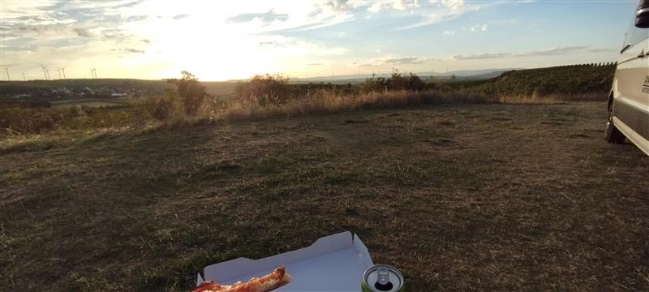
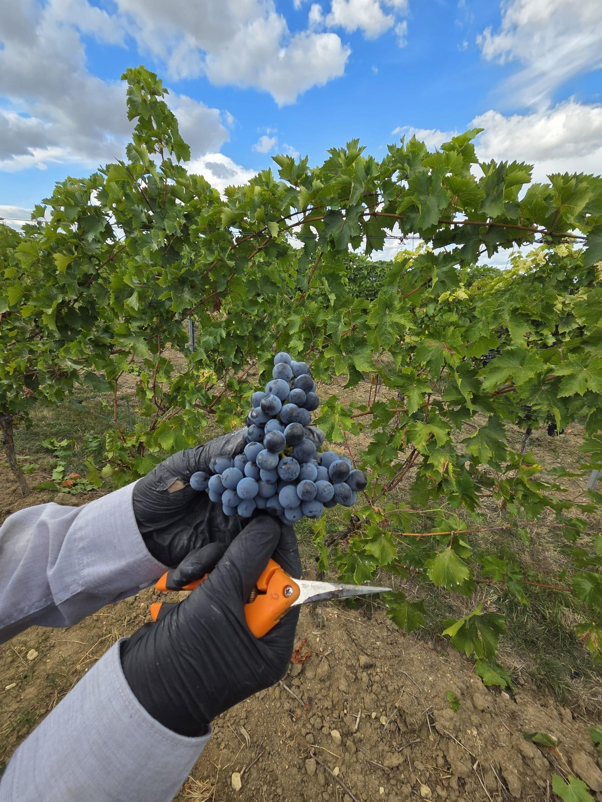
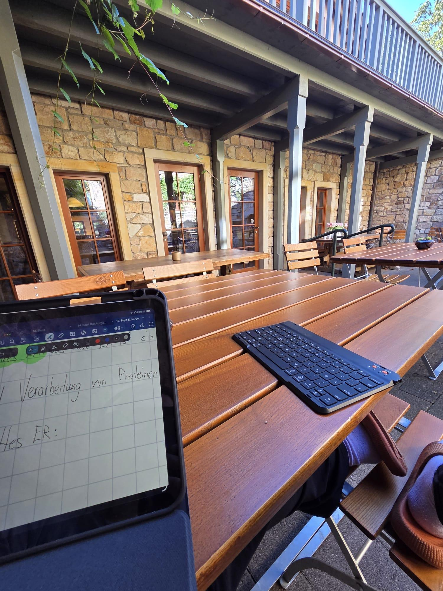
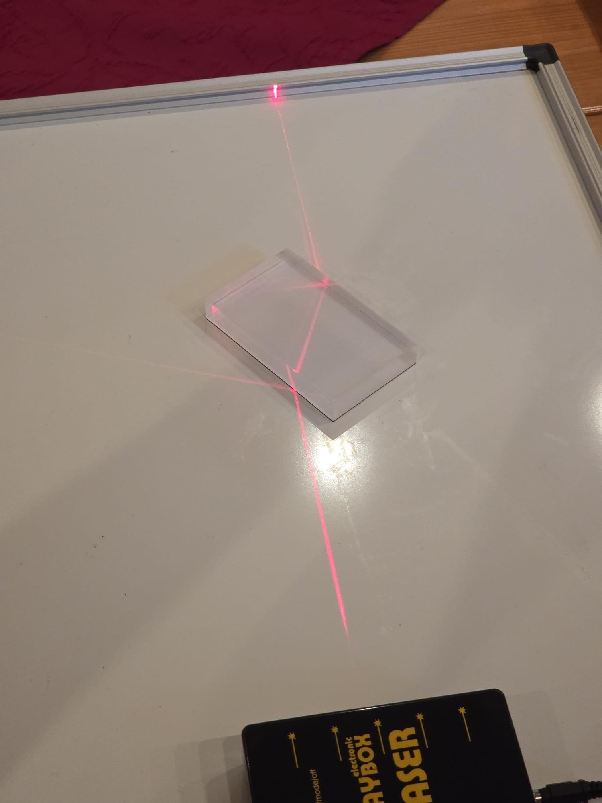
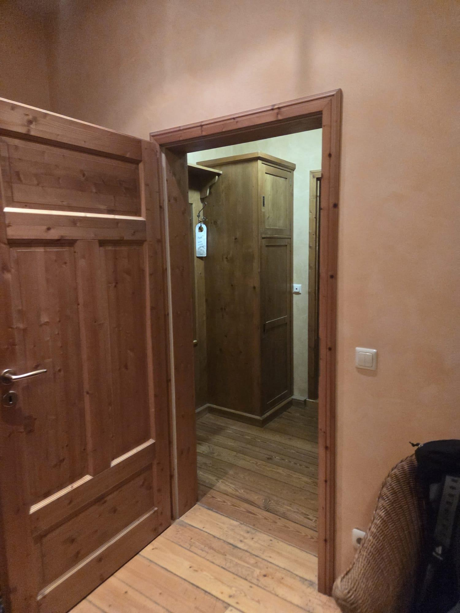
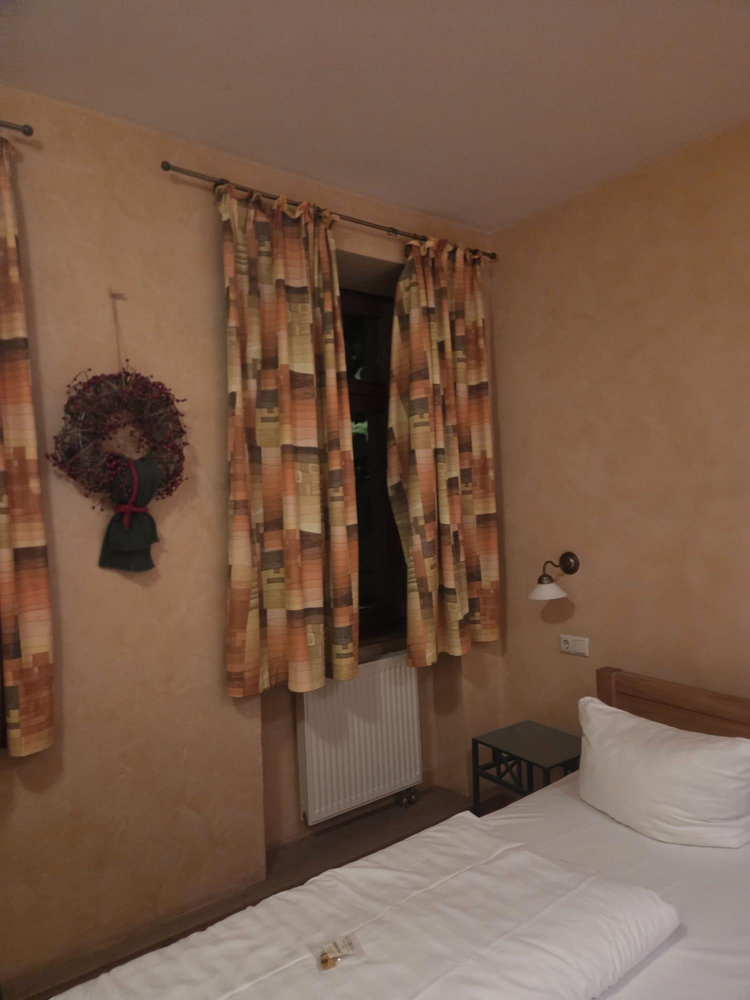
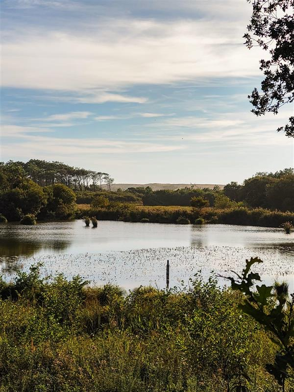
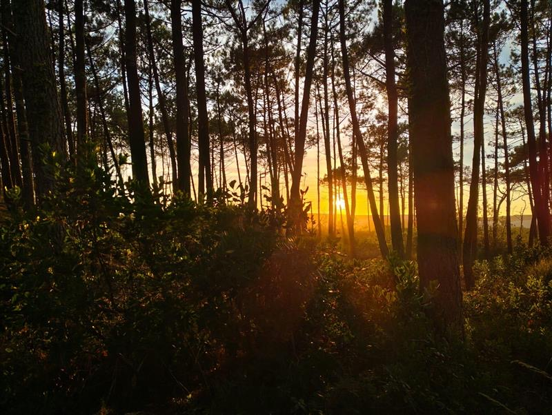
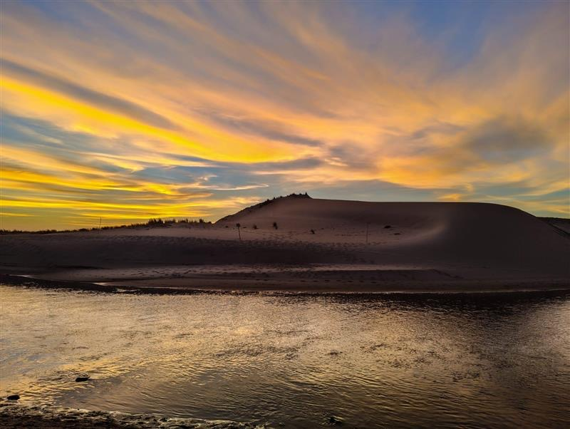
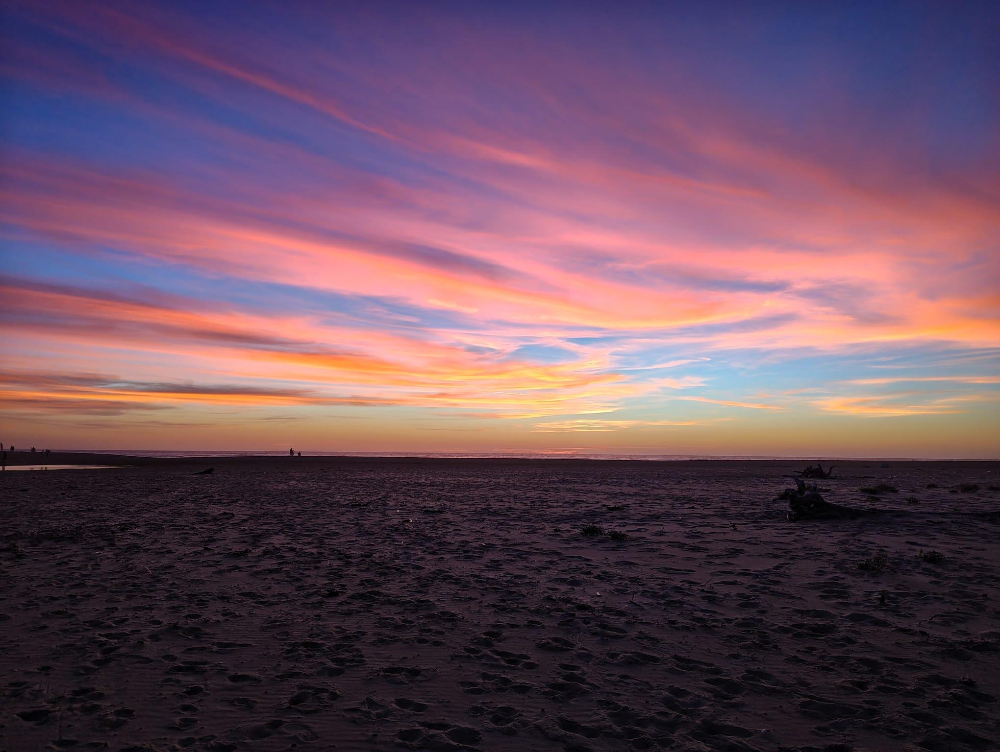

The First Stop for the Eb (International) this year just like the last years was a week on the winery Metzler. It started on a Sunday evening when the seven of us students and our two teachers (Robby, who does almost the whole trip with us and Achim, our physics teacher, who only stayed this week) met in a small village surrounded by wine-fields, at this point it was already getting dark so we did not do anything more than find out who gets which room and go to bed that day.
Monday till Friday all started with us getting up and eating breakfast at 7:15 am and then doing our work for school till 12, after that we drove to the Winery Metzler where we got really good lunch and Monday to Thursday, we got to work on the wine-field for at least a few hours which was quite exhausting but also fun (except for the one day where it was way too hot). After the work though it differed massively from day to day what we did, on two days we just bought something to eat and went to a nice viewing spot above the wine-fields where we then ate, then on one day we drove to a nearby village and ate at a Chinese restaurant After looking around the town-centre for a bit, then there was one day where we did a wine tasting for over 3 hours with 14 different wines from the Winery Metzler.






Friday, the last day, was a bit different, just like the other days it started with us getting breakfast Like the days before then we had to pack up and do our school work, then at noon we left our home for the last time, again getting lunch at the winery, but then we got shown a few of the other Production Steps and had the Chance to buy some wine which, luckily, Achim took with him to keep them cool as it was his last day with us, at the same time Jenny (our Biology and Sport teacher arrived who would keep traveling with us to the next Stop), and we set off on an at least eleven hour drive.
After visiting the winery Metzler, we were excited to embrace our journey to France. More precisely, our next destination was Moliets-et-Maa, a city located at southwest from France nearby the Atlantic. It was a stressful drive that took nearly whole night! Everyone couldn‘t fall asleep easily. Our teacher Robert and Jennifer took turn to drive. It was already 6:30 when we arrived in La Saint Martin, our camping place.
On the first day, we spent the morning exploring the entertainment facilities in this area. In the afternoon, all of us went to the beach to enjoy sunshine and seawater! Our students have come up with an idea and built a sandpile using hands. They stuck a branch into the pile and a sticker was put on it. A wonderful creation!
Our focus on the second day lay in surfing, which all of us had no experience with. On the afternoon, we had surfing lesson, learning how to have higher speed with help from sea waves and control your body to stand on the surfboard. This brought great joy to us! Many of us had already attempted for many times before having success.
In the Monday evening, we wandered in the forest, having picnics with baguette. On our way back, we walked over a sand area and met a river. We have recorded different sounds from nature for our music assignment. Both our eyes and ears have experienced enjoyment!
In these days, preparing food for three meals by ourselves became a new challenge. We have purchased necessary foods from supermarkets, prepared salats and wraps and cooked potatoes and spaghetti. Always thinking of preparing food brings stress. If we are able to plan everything in advance, we will feel secure and better! Overall, we have spent a joyful time on the beach! We are still excited for our new destinations!



